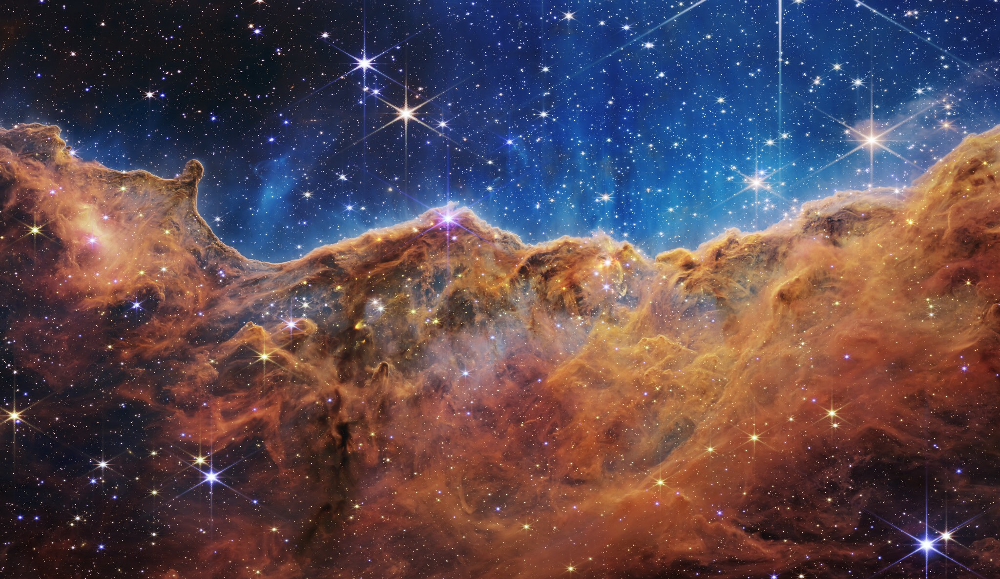
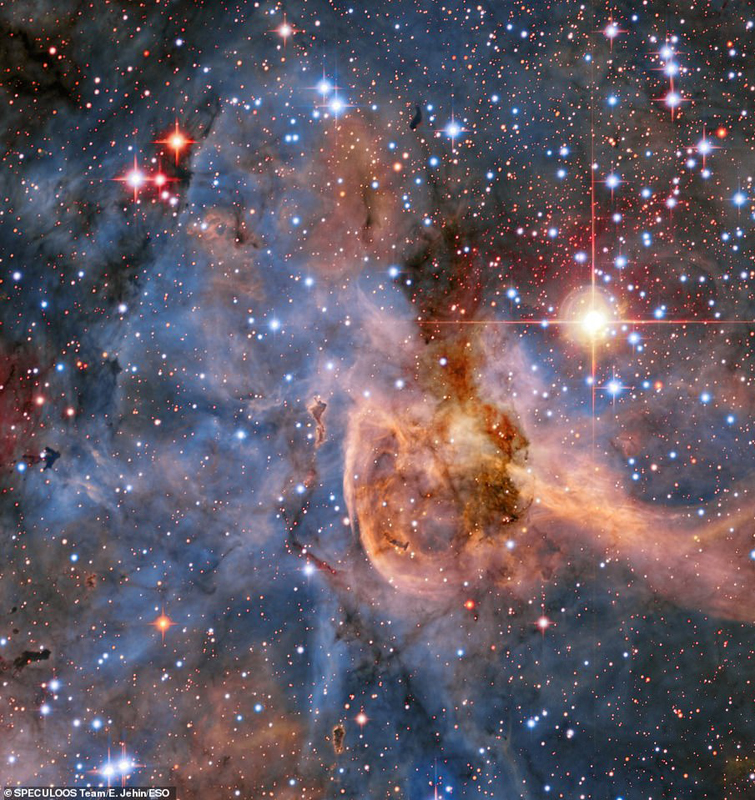
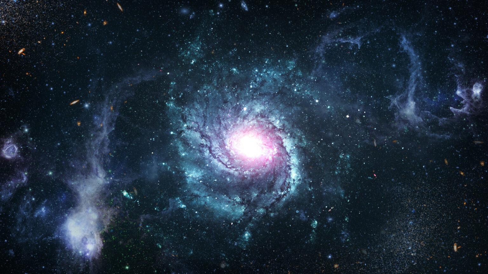
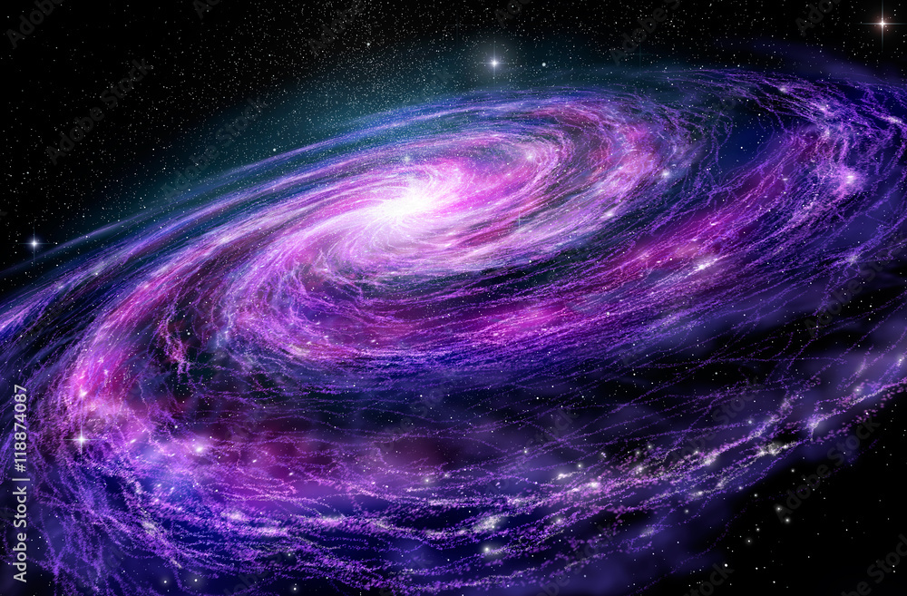
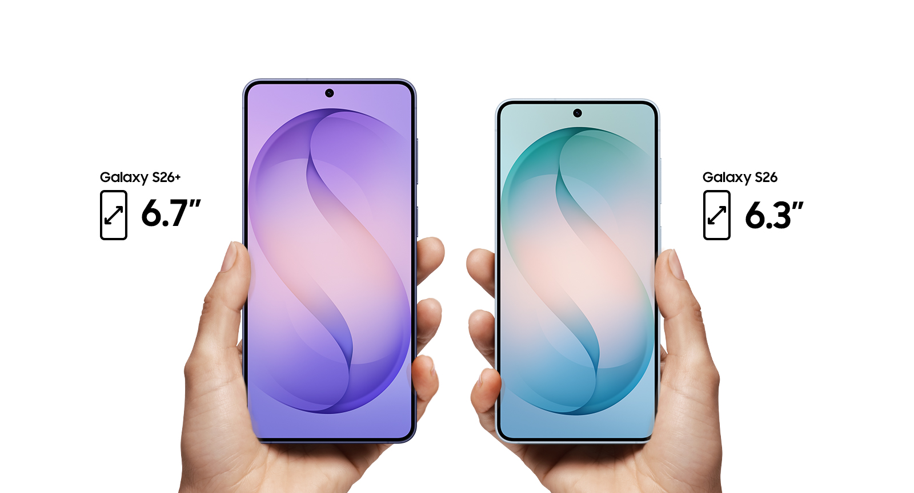
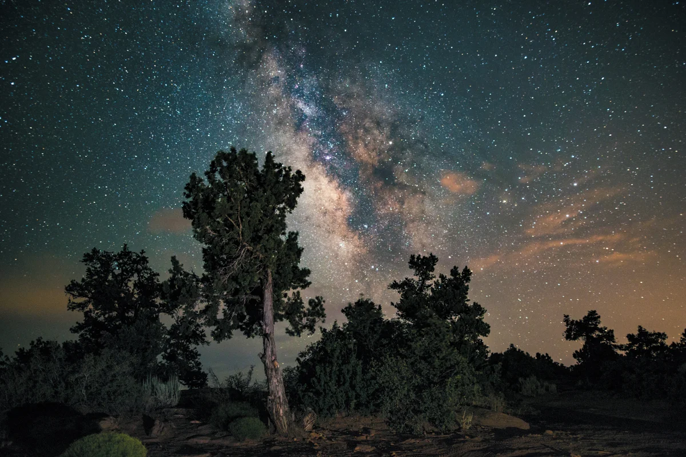

Про нас
Ми - незалежна організація, що займається аналізом сигналів з далекого космосу. Наша мета - знайти відповідь на питання: "Чи ми самі у Всесвіті?".

Завдяки нашим станціям у Чилі та на зворотному боці Місяця, ми прослуховуємо понад 1 000 000 зіркових систем щодня.
Чому обирають наші експедиції?
- Найсучасніші радітелескопи
- Прямий зв'язок з орбітальною станцією
- Гарантована безпека даних
Наші основні напрямки:
- Пошук екзопланет у "зоні життя"
- Розшифровка радіосигналів
- Підготовка до першого контакту
Наші космічні технології
Символ експедиції
Відеогалерея місій
Ми проводимо експедиції до найвіддаленіших куточків галактики, використовуючи найсучасніші технології для збору та аналізу даних.
Послухайте "Звуки космосу":
Запис радіохвиль, перетворених у звуковий діапазон.





Контактна інформація
Центральний офіс:
Галактичний сектор 42, Квадрант Альфа
м. Київ, вул. Зоряна, 101
Наші актуальні місії
- Проєкт "Кеплер-186f"
- Радіосканування сузір'я Лебедя
- Пошук води на Європі